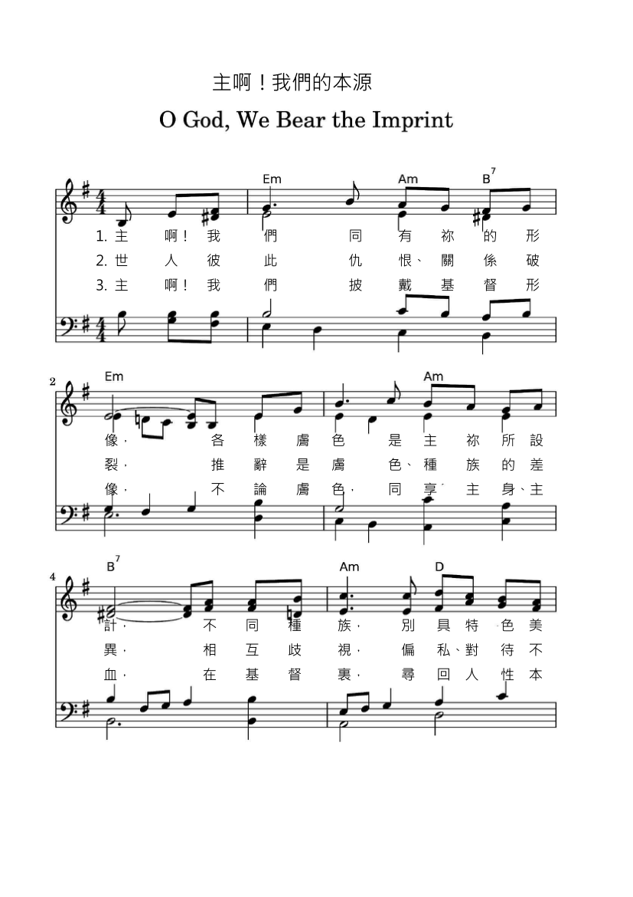

|
|
575上主形象 |
O God, we bear the imprint of your face:
the colors of our skin are your design,
and what we have of beauty in our race
as man or woman, you alone define,
who stretched a living fabric on our frame
and gave to each a language and a name.
Where we are torn and pulled apart by hate
because our race, our skin is not the same,
while we are judged unequal by the state
and victims made because we own our name,
humanity reduced to little worth,
dishonored is your living face on earth.
O God, we share the image of your Son
whose flesh and blood are ours, whatever skin,
in humanity we find our own,
and in his family our proper kin:
Christ is the brother we still crucify,
his love the language we must learn, or die.
|
|
|
https://m.tintinpiano.com/sheetmusic/102171 主啊！我們的本源  https://www.hopepublishing.com/find-hymns-hw/hw2901.aspx
|
|
|
|
|


新普天頌讚 #575 上主形像 聖詩分析 https://www.hkchurchmusic.org/index.php/component/allvideoshare/video/hup575 - O God We Bear The Imprint Hymn 759
https://youtu.be/xKQdscLep40 - 254 O God We Bear The Imprint - Finlandia
https://youtu.be/Zz_OJ6gcGxI
| Text: | O God, We Bear the Imprint |
| Author: | Shirley Erena Murray |
| Tune: | TODOS LOS COLORES |
| Composer: | Margaret R. Tucker |
| Short Name: | Shirley Erena Murray |
| Full Name: | Murray, Shirley Erena, 1931- |
| Birth Year: | 1931 |
| Death Year: | 2020 |
Shirley Erena Murray (b. Invercargill, New Zealand, 1931)

studied music as an undergraduate but received a master’s degree (with honors) in classics and French from Otago University. Her upbringing was Methodist, but she became a Presbyterian when she married the Reverend John Stewart Murray, who was a moderator of the Presbyterian Church of New Zealand. Shirley began her career as a teacher of languages, but she became more active in Amnesty International, and for eight years she served the Labor Party Research Unit of Parliament. Her involvement in these organizations has enriched her writing of hymns, which address human rights, women’s concerns, justice, peace, the integrity of creation, and the unity of the church. Many of her hymns have been performed in CCA and WCC assemblies. In recognition for her service as a writer of hymns, the New Zealand government honored her as a Member of the New Zealand Order of Merit on the Queen’s birthday on 3 June 2001. Through Hope Publishing House, Murray has published three collections of her hymns: In Every Corner Sing (eighty-four hymns, 1992), Everyday in Your Spirit (forty-one hymns, 1996), and Faith Makes the Song (fifty hymns, 2002). The New Zealand Hymnbook Trust, for which she worked for a long time, has also published many of her texts (cf. back cover, Faith Makes the Song). In 2009, Otaga University conferred on her an honorary doctorate in literature for her contribution to the art of hymn writing.
I-to Loh, Hymnal Companion to “Sound the Bamboo”: Asian Hymns in Their Cultural and Liturgical Context, p. 468, ©2011 GIA Publications, Inc., Chicago
紐西蘭女詩人茉瑞雪莉（Shirley Murray，1931 生）
她的赞美诗写作始于1970年代，经常将圣安德鲁教堂用作圣诗集的测试场所。 许多不同的作曲家都在她的赞美诗中加入了音乐。她的赞美诗已被翻译成多种欧洲和亚洲语言，并在全球140余首赞美诗中都有代表。 除新西兰外，它们还特别用于北美。
Tune Information
| Title: | TODOS LOS COLORES |
| Composer: | Margaret R. Tucker (1998) |
| Meter: | 10.10.10.10.10.10 |
| Key: | e minor |
| Copyright: | © 1998 Hope Publishing Company |
| Short Name: | Margaret R. Tucker |
| Full Name: | Tucker, Margaret R. (Composer) |
| Birth Year: | 1936 |
主啊！我們的本源(O God, We Bear the Imprint of Your Face)
主啊！我們同有祢的形像，各樣膚色是主祢所設計，
不同種族，別具特色美麗，主造男女，有祢美好心意，祢手塑造身段、體態、肺腑，各人因祢稱名，得以言語。
世人彼此仇恨、關係破裂，推辭是膚色、種族的差異，相互歧視，偏私、對待不公，遭受無辜傷害，皆因名利，人性崇高，尊嚴本屬無價，上主形像蒙羞，在世殘缺。
主啊！我們披戴基督形像，不論膚色，同享主身、主血，在基督�堙A尋回人性本源，主內一家，肢體彼此相悅，基督為兄，竟遭釘死捨身，惟願忠貞效法主愛而行。
https://m.tintinpiano.com/sheetmusic/102171